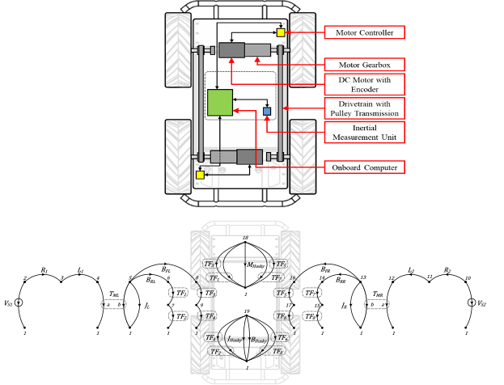

Mechatronic Modeling and Design with Applications in Robotics
Course Description
This course will introduce a unified multi-domain modeling tool, named Linear Graph and its applications. It provides students with the tools required to design, model, analyze and control mechatronic systems; i.e. smart systems comprising electronic, mechanical, fluid and thermal components. The techniques for modelling various system components will be studied in a unified approach developing tools for the simulation of the performance of these systems. A comprehensive example of the modeling and design of a mobile robotic system will be included and discussed.
Students who successfully complete the course should have reliably demonstrated the ability to:
- Use the basic tools required to design, model, analyze and control mechatronic systems
- Work with smart systems comprising electronic, mechanical, fluid and thermal components
- Model a wide variety of system components in a unified way
- Analyze various components needed to design and control mechatronic systems
- Apply AI and Machine Learning in advanced design and optimization
| Reference Books: | Clarence W. de Silva, Mechatronics: A Foundation Course, CRC Press, 2010. Link Haoxiang Lang, Eric McCormick and Clarence W. de Silva, Appendix B: Matlab Toolbox for Linear Graphs (Modeling of Dynamic Systems with Engineering Applications, 2nd Edition) Download |
| Reference Articles: | Research and Development of a Linear Graph-based Matlab Toolbox. Download Automated Multi-domain Engineering Design through Linear Graphs and Genetic Programming. arxiv Dynamic Modeling and Simulation of a Four-wheel Skid-Steer Mobile Robot using Linear Graphs. arxiv |
| Matlab Toolbox： | Linear Graph Matlab Toolbox: gitHub |
Course Evaluation: |
Select either the course project or take-home exam as the final course deliverable. |
| Final Report Template： | Microsoft Word file Download |
| Final Take-home Exam： |
Course Notes
| Item | Title | Material |
|---|---|---|
| Lecture 1 | Course Overview and Introduction | Slides Notes |
| Lecture 2 | Introduction to Modeling | Slides Notes |
| Lecture 3 | Basic Model Elements | Slides |
| Lecture 4 | Analytical Modeling (Part 1) | Slides |
Homework 1 |
No Due Date |
Homework 1 Solution |
| Lecture 5 | Analytical Modeling (Part 2) | Slides |
| Lecture 6 | Graphical Models | Slides |
Homework 2 |
No Due Date |
Homework 2 Solution |
| Lecture 7 | Linear Graph | Slides |
| Lecture 8 & 9 | Linear Graph Examples | Slides |
Homework 3 |
No Due Date |
|
| Lecture 10 & 11 | Frequency Domain Models | |
| Lecture 12 | Transfer-Function Linear Graph | |
| Lecture 13 | AI in Modeling and Design | |
| Lecture 14 | Linear Graph Matlab Toolbox | |
| Lecture 15 & 16 | Examples of Applications | |
Homework 4 |
No Due Date |